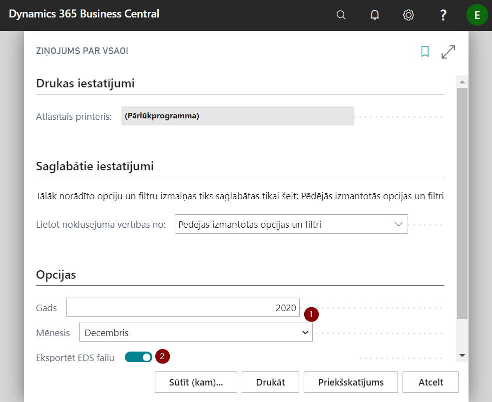

Atskaites
Lomu centra sākumlapā ir pieejama saīsne ar nosaukumu Atskaites uz galvenajām standarta atskaitēm.
Sistēma nodrošina Latvijas likumdošanā noteikto obligāto atskaišu sagatavošanu un eksportēšanu uz EDS:
- Ziņojums par VSAOI
- Ziņas par darba ņēmējiem (ja ieslēgts)
- Paziņojums par fiziskām personām izmaksātām summām
- IINNR saraksts
Kā arī iespējams izdrukāt atskaites iekšējai lietošanai, tādas kā:
- Izmaksa uz banku/kasi - piemka;sajumiem jāpārceļ
- Personīgais konts
- Uzkrātā atvaļinājuma aprēķina atskaite
- Algas komponenšu kopsummas
- Darbinieku AK pa mēnešiem
EDS atskaites
Ziņojums par VSAOI
Lai sagatavotu Ziņojumu par VSAOI, atskaites drukāšanas logā izvēlieties periodu, par kuru vēlaties sagatavot atskaiti ( ) un izvēlieties Eksportēt EDS failu (
) un izvēlieties Eksportēt EDS failu ( ), ja vēlāties izdrukājot atskaiti sagatavot arī failu augšupielādei EDS sistēmā.
), ja vēlāties izdrukājot atskaiti sagatavot arī failu augšupielādei EDS sistēmā.

Ziņas par darba ņēmējiem
Lai sagatavotu Ziņas par darba ņēmējiem, atskaites drukāšanas logā jāatzīmē nepieciešamība sagatavot eksporta failu (), ja nepieciešams, filtrā jāiestata kādi specifiski darbinieku atlases kritēriji () un, ja nepieciešams, norāda periodu ( ) par kādu nepieciešams sagatavot atskaiti.
) par kādu nepieciešams sagatavot atskaiti.

Paziņojums par fiziskai personai izmaksātām summām
Lai izveidotu paziņojumu par fiziskajām personām izmaksātajām summām, jāveido jauns dokuments (jeb buferis) sarakstā PFPIS virsraksts, kas pieejams ievadot nosaukumu sistēmas meklētājā.
PFPIS buferis sastāv no 3 daļām – Vispārīgā informācija, Kopsummas, PFPIS rindu apakšforma.
Lai sagatavotu buferi, aizpildiet cilnes Visp. info laukus un rīkjoslā klikšķiniet uz pogām Apstrādāt () - Ģenerēt ierakstus ().
Kad dati buferī ir saģenerēti un pārbaudīti, var sagatavot eksporta failu iesniegšanai EDS noklikšķinot uz pogas Eksportēt uz XML ().
Pirms iesniegšanas EDS, pārskatu var izdrukāt un pārbaudīt klikšķinot rīkjoslā uz pogām Pārskats - Drukāt kopsavilkumu vai Drukāt darbinieku.

Cilne Visp. info
| Lauka nosaukums | Apraksts |
|---|---|
| Nr. | PFPIS dokumenta numurs. Aizpildās automātiski. |
| Kods | Uzņēmuma reģistrācijas Nr., aizpildās automātiski no Uzņēmuma informācija. |
| Apraksts | Dokumenta apraksts. |
| Gads | Bufera veidošanas gads. |
| Mēnesis | Izvēlas no saraksta bufera veidošanas mēnesi. Ja nepieciešams paziņojums par atbrīvotajiem darbiniekiem, izvēlas mēnesi, kurā darbinieks/-i ir atlaists/-i. Ja nepieciešams gada paziņojums par visiem darbiniekiem, tad sarakstā izvēlas Gads. |
| Noslēgts | Pazīme, ka buferis ir iesniegts EDS un noslēgts. |
| Izpildītājs | Atbildīgās personas vārds un uzvārds. |
| Izpildītāja tālruņa nr. | Atbildīgās personas tālruņa nr. |
Cilne Kopsummas
R05..R16 – bufera rindu vērtību lauku kopsummas
Cilne PFPIS rindu apakšforma
Bufera rindas ģenerējas automātiski palaižot funkciju Ģenerēt ierakstus. Bufera sagatavošanai var izmantot dažādus filtrus, ko piedāvās rindu ģenerēšanas logs.
Analītiskās atskaites
Atskaites iekšējai lietošanai uzņēmumā.
Izziņa par ienākumiem
Pēc darbinieka pieprasījuma sagatavojama izziņa, kur darba devējs uzrāda izvēlētā laika periodā (3, 6 vai 12 mēneši) aprēķināto darba algas un nodokļu apmēru, kā arī apliecina apmaksu veikšanu. Ar iespēju norādīt izziņas izsniegšanas mērķi.
Uzkrātais atvaļinājums
Uz brīvi izvēlētu datumu () var aprēķināt darbinieku neizņemtās atvaļinājuma dienas, kā arī to izmaksas, ņemot vērā darbinieku vidējo dienas izpeļņu un darba devēja sociālā nodokļa izmaksas. Kā arī, var nosūtīt () uz virsgrāmatas žurnālu () atvaļinājuma uzkrājumu summas ( ) grāmatojumus. Rezultātā virsgrāmatas žurnālā būs sagatavoti grāmatojumi, kurus atliek pārbaudīt un iegrāmatot.
) grāmatojumus. Rezultātā virsgrāmatas žurnālā būs sagatavoti grāmatojumi, kurus atliek pārbaudīt un iegrāmatot.

Vidējā izpeļņa
Pēc pieprasījuma darbiniekam var sagatavot atskaiti par viņa vidējo izpeļņu - dienas un stundas griezumā. Dati tiks sagatavoti uz aktuālo darba datumu.
Papildus var norādīt vidējās mēneša izpeļņas sadalījumu pa mēnešiem.
Algas lapiņa
Var izdrukāt jebkura mēneša algas lapiņu jebkuram darbiniekam vai algas sarakstam.
Tabeles izdruka
Var izdrukāt darba laika uzskaites tabeles veidni, kuru nosūtot uz Word vai Excel vidi var koriģēt pēc nepieciešamības.
Tabelē tiek attēlotas plānotās darba stundas saskaņā ar katram darbiniekam piesaistīto Darba laika kalendāru.
Atskaites izdrukas logā iespējojot pogu Uzskaite, tabeles izdrukā tiks atrādītas pieprasītajā periodā katram darbiniekam reģistrētās prombūtnes, un atbilstoši samazinātas plānoto darba dienu/stundu skaits.
Tip
*Stundu reģistrā ievadītās stundas neatrādās Tabeles izdrukā. Lai iegūtu faktiski nostrādātā darba laika datus, nepieciešams importēt atskaiti Excel vai Word vidē un sagatavot izdruku ar faktisko stundu sadalījumu pa diemām.
Algu analīze
Lai varētu izmantot šo atskaiti, ir jāsagatavo Algu analīzes veidnes kartiņa, kas atbildīs jūsu uzņēmuma prasībām.
Algas komponenšu analīze
Atskaitē Darbinieka AK pa mēnešiem algu komponenšu vērtības ir izvērstas tabulā pa mēnešiem katram darbiniekam atsevišķi.
Savukārt atskaitē Algas komponenšu kopsummas var iegūt datus analīzei pa komponenšu kodiem atsevišķam izvēlētam algu sarakstam kopā.
Personīgais konts
Var izdrukāt katram darbiniekam atsevišķu pārskatu, kurā iekļauti visi darbinieka algas aprēķinu dati pa mēnešiem gada griezumā. Ppaildus tabulā uzskaitītas visas prombūtnes.
Pensionēšanās vecums
Darbinieku vidējais skaits
Norādot algas dimensiju un periodu, iespējams iegūt datus par vidējo darbinieku skaitu, darbinieku skaitu perioda sākumā, darbinieku skaitu perioda beigās, un atbrīvoto darbinieku skaitu. Iespējams pievienot papildus filtrus, piemēram, atlasīt darbinieku skaitu pēc dzimuma.